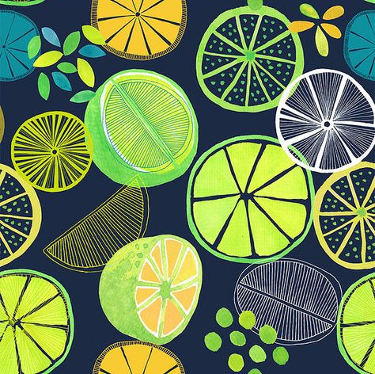
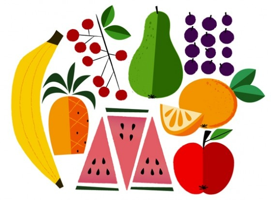

Присутність овочів в щоденному раціоні є універсальним рецептом здорового харчування
Овочі ставлять броню всередині нашого організму від різних захворювань. Якщо ваш раціон багатий овочами, то це гарантовано зменшує ризики виникнення серцево-судинних хвороб, діабету 2-го типу, утворення каменів в нирках, втрати кісткової тканини, ожиріння і деяких видів раку.
Овочі корисні для мозку. Антиоксиданти в складі овочів, протидіють пошкодженню клітин і допомагають запобігти атеросклерозу, хворобі Альцгеймера і Паркінсона.
Плоди запобігають стресу. Через емоційне виснаження люди переїдають. Але слід пам’ятати, що багато овочів містять поживні речовини, а також жирні кислоти омега-3, які допомагають боротися з тривожністю і депресією.
Овочі допомагають підтримувати вагу в нормі. У них міститься клітковина, яка необхідна для швидкого насичення без шкідливих калорій. Разом з овочами ви споживаєте більше корисних і поживних речовин.
Старіння – це процес окислення, а вживання в їжу антиоксидантів дозволяє уповільнити цей процес, а значить і старіння нашого організму. Крім того вони попереджують розвиток онкологічних захворювань. В овочах та фруктах міститься велика кількість антиоксидантів, але вони залишаються активними лише протягом декількох годин, потім гинуть. Тому вживати їх потрібно регулярно. Це сповільнить процес старіння і збереже Вашу красу та здоров’я.
Овочі покращують зір і запобігають ризику появи хвороб очей. Бета-каротин, що міститься в моркві, бореться з макулярною дегенерацією сітківки і катарактою.
Це далеко не весь список корисних властивостей овочів. Тому, якщо ви не знаєте, що сьогодні приготувати на вечерю – просто з’їжте свіжі овочі.
Нагадаємо, вживання фруктів і овочів може покращити психічне здоров’я і пом’якшити прояв депресії, про це заявили експерти з Університету Отаго в Новій Зеландії. В ході дослідження вони виявили, що у людей, які споживали більше продуктів в сирому стані, був вищий рівень психологічного благополуччя в порівнянні з тими, хто їв в основному варені овочі і фрукти.
У дослідженні було названо 10 фруктів і овочів, для яких в першу чергу характерні озвучені висновки: морква, банани, яблука, чорна листова зелень, грейпфрут, салат, цитрусові, свіжі ягоди, огірок і ківі. Так само відзначається позитивна дія селери, капусти, томатів, грибів і червоної цибулі.
Щоденно вживаючи свіжі овочі та фрукти, ми отримуємо необхідну кількість вітамінів А, С, Е, В1, В2, В6, К, РР. Крім того багато заліза, калію, магнію, кальцію, фосфору та інших мікроелементів. Завдяки цим речовинам відбуваються процеси кровотворення, зміцнюється імунітет, забезпечується нормальна діяльність всіх органів та систем.
В даному випадку мова йде про холестерин, який накопичується у внутрішній стінці судин і призводить до розвитку серцево-судинних захворювань та їх ускладнень. Знизити його рівень в крові теж допоможуть фрукти і овочі. Холестерин потрапляє в організм з тваринною їжею. В рослинній їжі холестерину немає, натомість є пектин та клітковина, які допомагають виводити шкідливий холестерин з організму.
Фрукти та овочі містять речовини (селен, фолієву кислоту, калій, вітамін С), які сприяють виробленню ендорфінів – так званих “гормонів щастя”. Тому, якщо у Вас поганий настрій, з’їжте порцію фруктів і Вам одразу захочеться посміхнутися.
Для того щоб організм отримав повноцінну дозу усіх необхідних йому речовин протягом дня слід вживати принаймні 5 порцій фруктів та овочів. Порція – це розмір Вашої пригоршні. 5 порцій дорослої людини міститимуть приблизно 500 г овочів і фруктів. І не забувайте, важливо, щоб на столі було різноманіття, тільки так організм отримає оптимальну кількість корисних речовин і вітамінів.